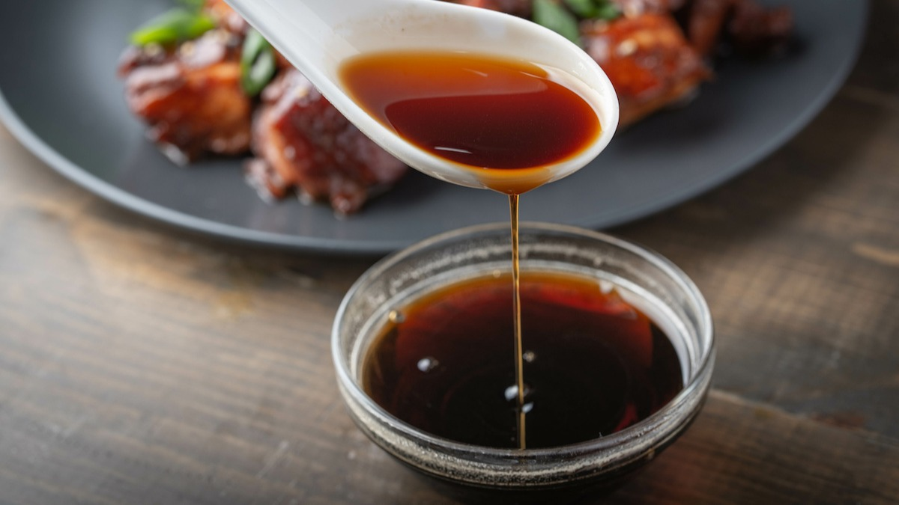

Simplified Tare

Description
This is a simplified tare you can use to marinate or brush onto meat, or you can reduce it to a glaze in a pan and paint onto whatever you like.
Ingredients
- 1/4 cup soy sauce
- 1/4 cup sake
- 1/4 cup mirin
- 1 tbsp sugar
Steps
- Combine all the ingredients in a bowl and whisk.
- Transfer to a jar and store in the fridge for up to a month.
- Shake or stir before using.